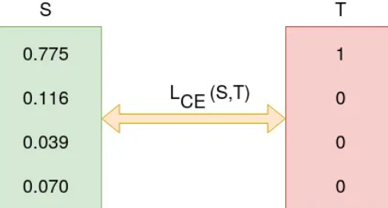

v.
Overview
- History and concept of Neural Networks
- Neural Nets Construction
- Deep Learning
Perception Model
Classification Approaches (recall)
- Top-down: breaking down the task into smaller, more manageable steps, gradually building towards a complete solution
- inspiration from higher abstraction levels
- Bottom-up: starting with individual components and gradually building a comprehensive classification solution
- inspiration from biology, e.g. neural networks

Biological Neurons
Human brain is estimated to contain around
86,000,000,000 of such neurons
Each is connected to thousands of other neurons
Biological Neurons Facts
$\qquad\qquad\qquad\qquad\qquad\qquad\quad$
- Connected to others
- Represents simple computation
- Has inhibition and excitation connections
- Has a state
- Outputs spikes
Human brain is estimated to contain around
86,000,000,000 of such neurons
Each is connected to thousands of other neurons
Artificial Neuron
Warren McCulloch and Walter Pitts (1943)
A Logical Calculus of the Ideas Immanent in Nervous Activity
The goal of simple artificial neuron model is to reflect some neurophysiological observations, not to reproduce their dynamics
The Perception Model
Question: what if we consider $S$ as a sum of the inputs as $S(x)=\sum_i x_i$
Weighted Sum of the Inputs
$\qquad\qquad$
%%{init:
{'theme': 'dark',
'themeVariables': { 'darkMode': true }
}
}%%
graph LR
A[x1] -- w1 --> B(neuron)
C[x2] -- w2 --> B
D[x3] -- w3 --> B
E[..] -- .. --> B
F[xn] -- wn --> B
B --> G(output)
$$\color{cyan} \sum_{\color{yellow}i=1} x_i w_i + b \to \color{red}\bm{f} \color{white} (\color{cyan} \sum_{\color{lime}i=0} x_i w_i \color{white}), x_0 := 1, w_0 := b$$ where $\color{red}\bm{f}$ is the activation function Why do we need $\color{red}\bm{f}$?
Why Do We Need Activation Function?
$$\color{cyan} \sum_{\color{yellow}i=1} x_i w_i + b \to \color{red}\bm{f} \color{white} (\color{cyan} \sum_{\color{lime}i=0} x_i w_i \color{white}), x_0 := 1, w_0 := b$$ where $\color{red}\bm{f}$ is the activation function, Why do we need $\color{red}\bm{f}$?- It's a linear model no matter how many neurons were used
- To introduce non-linear behaviour
- Activation functions are often called non-linearities
- Activation functions are applied point-wise
Activation Functions
Threshold Function $$f(x) = \begin{cases} 1 \qquad & if \> x \ge T \\ 0 \qquad & if \> x \lt T \end{cases} $$
Piecewise-Linear Function $$f(x) = \begin{cases} 1 \qquad & if \> x \ge 0.5 \\ x+0.5 \qquad & if \> -0.5\le x \le 0.5 \qquad \\ 0 \qquad & if \> x \le -0.5 \end{cases} $$
Sigmoid Function $$f(x) = \frac{1}{1+e^{-x}} = \frac{e^x}{e^x+1}$$
Cross Entropy
Recall the definition of entropy in information theory:$H(Y) = - \sum_{y \in \char"1D550} \color{lightgreen} P(Y=y) \color{red} log_2 P(Y=y)$
The Cross-Entropy for classification can be defined as:
$loss_{CE}(\color{red}p \color{white},\color{lime}q\color{white}) = -[\color{red}p \color{white} \cdot log (\color{lime}q \color{white}) + (1-\color{red}p \color{white}) \cdot log (1- \color{lime}p \color{white})]$
- Cross entropy loss is also called negative log likelihood or logistic loss
- It encodes negation of logarithm of probability of correct classification
- It is composable with sigmoid function
Loss as Cross Entropy
The training process tries to minimise the Cross Entropy Loss between the output and the ground truth

Neural Networks
Multi-layer Neural Networks
How can we get complex non-linearity with the simple perceptron model?
- Possible solution: multi-layer neural nets
- Instead of having inputs feeding directly into output neurons, we can add more "hidden" neurons in between - human brains like that!
- If we think of perceptron as dividing a space into 2 parts with a single line
- multiple perceptron $\implies$ multiple dividing lines
- Complex non-linear separation can be approximated by multiple lines
- recall decision tree $\implies$ random forest
- Hidden layer provides non-linear input space transformation so that final linear layer can classify
Multi-layer Neural Nets
%%{init:
{'theme': 'dark',
'themeVariables': { 'darkMode': true }
}
}%%
graph LR
A[x1] & B[x2] & C[x3] --> E[f1]
B & C & D[...] --> F[f2]
A & C & D --> G[...]
E & F & G --> H[f3]
E & F & G --> I[...]
H & I --> J[...]
J --> K[output]
- Perceptron feeding into another perceptron, ...
- The black box can be quite complicated
- Can approximate (but not represent) arbitrary functions given enough hidden neurons
Training Multi-layer Neural Nets
The idea sounds cool! But how can we train the complex black box?
%%{init:
{'theme': 'dark',
'themeVariables': { 'darkMode': true }
}
}%%
graph LR
A[Input Layer] --> B[Hidden Layer1]
B --> C[Hidden Layer 2]
C -.-> D[Hidden Layer n]
D --> E[Output]
Idea: use the normal gradient descent approach to train the weights between the last hidden layer and the output layer
Issue: how about the other weights in the "complex" hidden layers?
Solution: backpropagation of errors (Rumelhart; Hinton; Williams, 1986)
Backpropagation
%%{init:
{'theme': 'dark',
'themeVariables': { 'darkMode': true }
}
}%%
graph LR
A[Input Layer] --> B[Hidden Layer1]
B --> C[Hidden Layer 2]
C -.-> D[Hidden Layer n]
D --> E[Output]
High level description:
- Build a loss function (e.g. $L = RMSE$)
- Employ a bit of calculus to calculate the partial derivative of $L$ with respect to each weight (use chain rule to do so)
- Use a differentiable activation function
- In practice: using sigmoid function
- more recently: tanh, ReLU, LeakyReLU, ELU, etc.
Learning Rate
With the loss defined, the training process becomes an optimisation problem
The learning rate defines how fast the weight need to be altered
Large learning rate $\to$ difficult to converge
Small learning rate $\to$ slow training
Further Thoughts
- How to pick a proper learning rate?
- How may hidden layers do we need for a given problem?
- Some guidelines available but the only reliable approach is to try different values and see how it goes
- It takes times, remember this for developing your assignment!
- Other issues:
- Large datasets
- Large input space
- Computational issues
- Will deep learning do better?
Deep Learning
Deep Learning
- The main idea of deep learning is to transform the input into higher level abstractions with lower dimension (similar to the feature expansion trick)
- Multi-layer architecture - typically with many hidden layers - hence the name deep learning
- Each layer is responsible for a space transformation step
- By doing so, the complexity of non-linearity is decreased
- This is, however, very expensive
- Need to rely on new computations solutions: GPUs, grid computing, etc.
Deep Neural Network Issues
- With the increasing of network depth, other issues may appear:
- Vanishing Gradients
- Slow Training Speed
- Overfitting in Large Networks
- How can we cope with these problems?
Vanishing Gradients
- Training = backpropagation
- Calculate the weight gradient at the last hidden layer for the required change in the loss function
- Then, backpropagate to the previous layer, and go on...
- Observation: gradients often get smaller and smaller as we progress back to the previous layers
- Consequence: weights in the first layers (those closer to the input layer) never get significant changes
- Gradient descent gets stuck in bad local minima
Vanishing Gradients Reasons
- Glorot & Bengio (2010) identified some key reasons:
- Usage of sigmoid activation function
- Random initialisation with truncated Gaussian function
- try other initialisation methods (uniform distribution, normal distribution)
Sigmoid Function Problem
- Saturated (sigmoid) function
- Value will be close to 0 or 1 $\qquad\qquad\qquad\qquad\qquad\qquad\qquad\qquad\quad$
- Gradient will be very close to 0
- Making no changes in the
weights and biases - Affect the layers below its level
Hyperbolic Tangent Function
$tanh$: the Hyperbolic Tangent
Function
$tanh(x) = \frac{e^{-x}}{e^{-x}+e^x}$
Zero-centred
Larger derivatives than sigmoid
Didn't fix the saturating problem
completely
ReLU: Rectified Linear Unit
- $ReLU(x) = max(0,x)$
- easy to compute
- No limit on the max value (= no saturation)
- Issue: dying ReLU $\to$ stays at 0 forever if output becomes 0
- Observation: in some cases, up to half o the neurons suffer from this
ReLU Variants: Leaky ReLU
To fix the "dying ReLU" problem - no 0-slope part
$LReLU_\alpha (x) = max(\alpha x, x)$Leaky ReLU: Fixed slope when $x < 0$; Parametric ReLU: $a$ as a network parameter
ReLU Variants: Exponential Linear Unit
To fix the "dying ReLU" problem - no 0-slope part
$ELU_\alpha (x)= \begin{cases} x & if\> x \ge 0 \\ a(e^x-1) & if\> x \lt 0 \end{cases}$Activation Function Comparison
e.g. derivatives of other functions like $tanh$ are larger than sigmoid
Other Issues to Consider
- Exploding gradients: gradients become too large
- Batch normalisation: normalises the data per batch, may slow down the computation though
- Gradient clipping: clip the gradient if it becomes too large (e.g. > threshold)
- Slow training: the network trains too slow
- Transfer learning: reuse networks already trained on similar problems
- Other optimiser: Stochastic Gradient Descent (SGD), Momentum Optimisation, Nesterov Accelerated Gradient (NAG), Adaptive Gradient Descent (AdaGrad), Root Mean Square Propagation (RMSProp), Adaptive Moment Estimation (Adam), etc.
Optimiser Comparison


Comparison of training process using different optimiser
Overfitting Issue
- Too many parameters (weights, neurons, layers, etc)
- overfitting will occur quite often
- Early stopping: train on a mini-batch then validate and training again
- stop training as soon as the error on validation starts increasing
- Drop out: at every training step, every neuron (except the output layer) has a probability $p$ of being entirely ignored
- in practice, $p \text{\textasciitilde} 0.5$
- Data augmentation: artificially generate new data points from existing ones
- add some noises to existing data but keep the same label
Summary
- Perception model
- Artificial Neural Nets
- Deep Learning
- Issues with Neural Nets
Questions?